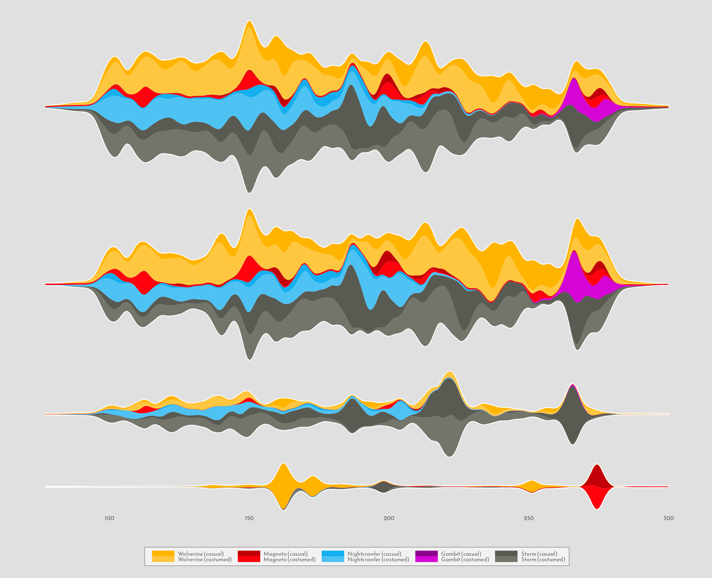
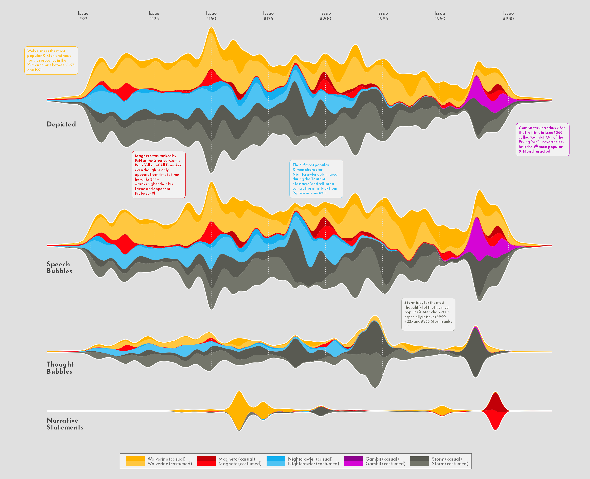
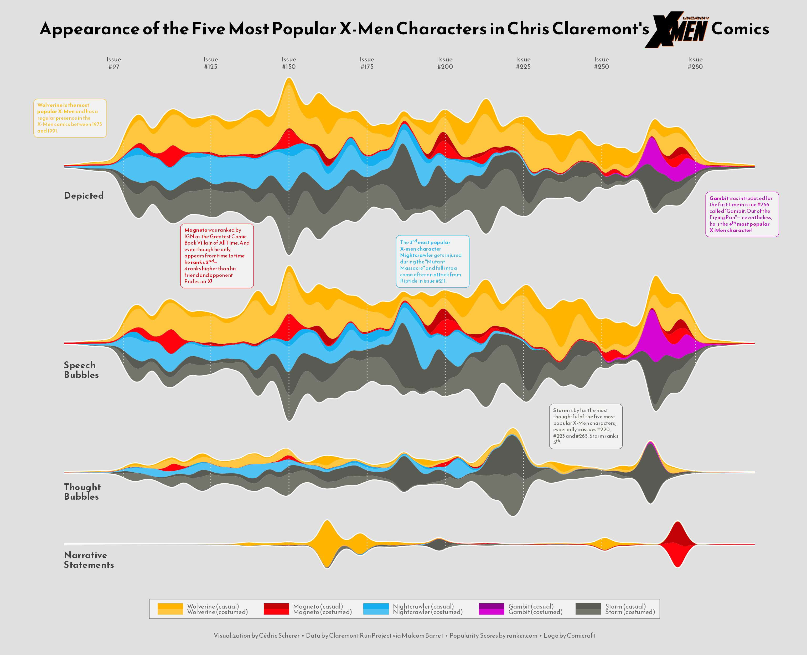

About
This page showcases the work of Cédric Scherer, built for the TidyTuesday initiative. You can find the original code on his github repository here
Thanks to him for accepting sharing his work here! 🙏🙏 Thanks also to Tomás Capretto who help writing down the blogpost!
As a teaser, here is the plot we’re gonna try building:

Packages and Theme
Let’s start by loading the packages needed to build the figure. They
are all great packages and today’s chart wouldn’t be possible without
them. But
ggstream
is the one that brings streamplots to ggplot2 and
deserves to be highlighted in this little introduction.
# Load packages
library(tidyverse)
library(fuzzyjoin)
library(ggstream)
library(colorspace)
library(ggtext)
library(cowplot)
Next, we set the theme for the plot. This theme is built on top of
theme_minimal() and uses the font
"Reem Kufi". Don’t know how to make custom fonts work in
R? Have a look at
this guide
especially made for you!
theme_set(theme_minimal(base_family = "Reem Kufi", base_size = 12))
theme_update(
plot.title = element_text(
size = 25,
face = "bold",
hjust = .5,
margin = margin(10, 0, 30, 0)
),
plot.caption = element_text(
size = 9,
color = "grey40",
hjust = .5,
margin = margin(20, 0, 5, 0)
),
axis.text.y = element_blank(),
axis.title = element_blank(),
plot.background = element_rect(fill = "grey88", color = NA),
panel.background = element_rect(fill = NA, color = NA),
panel.grid = element_blank(),
panel.spacing.y = unit(0, "lines"),
strip.text.y = element_blank(),
legend.position = "bottom",
legend.text = element_text(size = 9, color = "grey40"),
legend.box.margin = margin(t = 30),
legend.background = element_rect(
color = "grey40",
size = .3,
fill = "grey95"
),
legend.key.height = unit(.25, "lines"),
legend.key.width = unit(2.5, "lines"),
plot.margin = margin(rep(20, 4))
)Load and prepare the dataset
This guide shows how to create a highly customized and beautiful streamchart to visualize the number of appearences of the most popular characters in Chris Claremont’s sixteen-year run on Uncanny X-Men.
The original source of data for this week are the
Claremont Run Project and
Malcom Barret who put
these datasets into a the R package
cleremontrun. This guide uses the character_visualization dataset
released for the
TidyTuesday
initiative on the week of 2021-06-30. You can find the original
announcement and more information about the data
here. Thank you all for making this possible!
df_char_vis <- readr::read_csv('https://raw.githubusercontent.com/rfordatascience/tidytuesday/master/data/2020/2020-06-30/character_visualization.csv')The following is a data frame that ranks the most popular X-Men characters according to this source. Today’s chart is based on the top 5 most popular characters.
df_best_chars <- tibble(
rank = 1:10,
char_popular = c("Wolverine", "Magneto",
"Nightcrawler", "Gambit",
"Storm", "Colossus",
"Phoenix", "Professor X",
"Iceman", "Rogue")
)
The "character" column in
df_char_vis contains more information than just the name
of the characters In the next chunk,
regex_inner_join() from the
fuzzyjoin package automatically uses regular expressions
to merge df_char_vis and df_best_chars into
df_best_stream. This dataset contains the number of
appearences per issue by character, costume, and type of appearence.
df_best_stream <- df_char_vis %>%
regex_inner_join(df_best_chars, by = c(character = "char_popular")) %>%
group_by(character, char_popular, costume, rank, issue) %>%
summarize_if(is.numeric, sum, na.rm = TRUE) %>%
ungroup() %>%
filter(rank <= 5) %>% # Keep top 5 characters
filter(issue < 281)The following step isn’t strictly necessary, but it’s a cool trick to make the start and end of the stream smoother.
df_smooth <- df_best_stream %>%
group_by(character, char_popular, costume, rank) %>%
slice(1:4) %>%
mutate(
issue = c(
min(df_best_stream$issue) - 20,
min(df_best_stream$issue) - 5,
max(df_best_stream$issue) + 5,
max(df_best_stream$issue) + 20
),
speech = c(0, .001, .001, 0),
thought = c(0, .001, .001, 0),
narrative = c(0, .001, .001, 0),
depicted = c(0, .001, .001, 0)
)
The data is pivoted into a long format. A new variable,
char_costume, contains both the name of the character and
the costume (costumed or casual).
## factor levels for type of appearance
levels <- c("depicted", "speech", "thought", "narrative")
## factorized data in long format
df_best_stream_fct <- df_best_stream %>%
bind_rows(df_smooth) %>%
mutate(
costume = if_else(costume == "Costume", "costumed", "casual"),
char_costume = if_else(
char_popular == "Storm",
glue::glue("{char_popular} ({costume})"),
glue::glue("{char_popular} ({costume}) ")
),
char_costume = fct_reorder(char_costume, rank)
) %>%
pivot_longer(
cols = speech:depicted,
names_to = "parameter",
values_to = "value"
) %>%
mutate(parameter = factor(parameter, levels = levels))And finally, we define the color palette and some data that will be useful when adding annotations to the plot.
# Define the color palette
pal <- c(
"#FFB400", lighten("#FFB400", .25, space = "HLS"),
"#C20008", lighten("#C20008", .2, space = "HLS"),
"#13AFEF", lighten("#13AFEF", .25, space = "HLS"),
"#8E038E", lighten("#8E038E", .2, space = "HLS"),
"#595A52", lighten("#595A52", .15, space = "HLS")
)
# These are going to be labels added to each panel
labels <- tibble(
issue = 78,
value = c(-21, -19, -14, -11),
parameter = factor(levels, levels = levels),
label = c("Depicted", "Speech\nBubbles", "Thought\nBubbles", "Narrative\nStatements")
)
# These are going to be the text annotations
# If you wonder about the '**' or the '<sup>' within the text, let me tell you
# this is just Markdown syntax used by the ggtext library to make custom text
# annotations very easy!
texts <- tibble(
issue = c(295, 80, 245, 127, 196),
value = c(-35, 35, 30, 57, 55),
parameter = c("depicted", "depicted", "thought", "speech", "speech"),
text = c(
'**Gambit** was introduced for the first time in issue #266 called "Gambit: Out of the Frying Pan"— nevertheless, he is the **4<sup>th</sup> most popular X-Men character**!',
'**Wolverine is the most popular X-Men** and has a regular presence in the X-Men comics between 1975 and 1991.',
'**Storm** is by far the most thoughtful of the five most popular X-Men characters, especially in issues #220, #223 and #265. Storm **ranks 5<sup>th</sup>**.',
"**Magneto** was ranked by IGN as the *Greatest Comic Book Villain of All Time*. And even though he only appears from time to time he **ranks 2<sup>nd</sup>**—<br>4 ranks higher than his friend and opponent Professor X!",
'The **3<sup>rd</sup> most popular X-men character Nightcrawler** gets injured during the "Mutant Massacre" and fell into a coma after an attack from Riptide in issue #211.'
),
char_popular = c("Gambit", "Wolverine", "Storm", "Magneto", "Nightcrawler"),
costume = "costumed",
vjust = c(.5, .5, .4, .36, .38)
) %>%
mutate(
parameter = factor(parameter, levels = levels),
char_costume = if_else(
char_popular == "Storm",
glue::glue("{char_popular} ({costume})"),
glue::glue("{char_popular} ({costume}) ")
),
char_costume = factor(char_costume, levels = levels(df_best_stream_fct$char_costume))
)Basic Plot
Thanks to ggstream, it’s quite simple to build a
streamchart in ggplot2. All we need to use is the
geom_stream() function. On top of that, this first
version also sets the color scales and uses
facet_grid() to obtain one stream per type of appearence.
g <- df_best_stream_fct %>%
ggplot(
aes(
issue, value,
color = char_costume,
fill = char_costume
)
) +
geom_stream(
geom = "contour",
color = "white",
size = 1.25,
bw = .45 # Controls smoothness
) +
geom_stream(
geom = "polygon",
bw = .45,
size = 0
) +
scale_color_manual(
expand = c(0, 0),
values = pal,
guide = "none"
) +
scale_fill_manual(
values = pal,
name = NULL
) +
facet_grid( ## needs facet_grid for space argument
parameter ~ .,
scales = "free_y",
space = "free"
)
g

Note geom_stream() is used twice above. The first time,
it adds a white contour to each area. As a result, when the second
stream is added on top, only the outermost contour line remains,
creating a very nice highlighting effect. Nice trick!
Add annotations
The plot above looks really well, but it’s so minimalistic in its annotations that it misses the opportunity to share important information. The next step is to add labels and text to make this chart more insightful.
g <- g +
geom_vline(
data = tibble(x = c(97, seq(125, 250, by = 25), 280)),
aes(xintercept = x),
inherit.aes = FALSE,
color = "grey88",
size = .5,
linetype = "dotted"
) +
annotate(
"rect",
xmin = -Inf, xmax = 78,
ymin = -Inf, ymax = Inf,
fill = "grey88"
) +
annotate(
"rect",
xmin = 299, xmax = Inf,
ymin = -Inf, ymax = Inf,
fill = "grey88"
) +
# Appearence type label on each panel
geom_text(
data = labels,
aes(issue, value, label = label),
family = "Reem Kufi",
inherit.aes = FALSE,
size = 4.7,
color = "grey25",
fontface = "bold",
lineheight = .85,
hjust = 0
) +
# Add informative text
# geom_textbox comes with the great ggtext library.
geom_textbox(
data = texts,
aes(
issue, value,
label = text,
color = char_costume,
color = after_scale(darken(color, .12, space = "HLS")),
vjust = vjust
),
family = "Reem Kufi",
size = 2.7,
fill = "grey95",
maxwidth = unit(7.25, "lines"),
hjust = .5
) +
# Customize labels of the horizontal axis
scale_x_continuous(
limits = c(74, NA),
breaks = c(94, seq(125, 250, by = 25), 280),
labels = glue::glue("Issue\n#{c(97, seq(125, 250, by = 25), 280)}"),
position = "top"
) +
scale_y_continuous(expand = c(.03, .03)) +
# This clip="off" is very important. It allows to have annotations anywhere
# in the plot, no matter they are not within the extent of
# the corresponding panel.
coord_cartesian(clip = "off")
g

Those annotations are definetely a game changer!
Add title
There’s been tremendous progress since the first chart. The last step
is to add a very cool title that will make this marvelous even more
attractive. The function draw_image() from the
cowplot
library makes it really easy to add an image on top of the plot. Ready
to finish this up? Let’s go!
g <- g +
labs(
title = "Appearance of the Five Most Popular X-Men Characters in Chris Claremont's Comics",
caption = "Visualization by Cédric Scherer • Data by Claremont Run Project via Malcom Barret • Popularity Scores by ranker.com • Logo by Comicraft"
)
g <- ggdraw(g) +
# It works with only the path to the file! :)
draw_image(
"img/fromTheWeb/uncannyxmen.png",
x = .84, y = .955,
width = .1,
hjust = .5,
vjust = .5
)
g

And finally, if you want to export this streamchart in a high quality
format, it’s good to use ggsave with the
agg_png device from the
ragg library.
ggsave("img/fromTheWeb/streamchart-xmen.png", g,
width = 16, height = 13, device = ragg::agg_png)Conclusion
Here we are, with a very highly customized plot showcasing the
possibilities offered by the tidyverse and other packages like
ggstream, ggtext, and many others. Thanks
again to Cédric for providing this chart example!